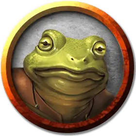

Королевский жаболюд
Bullywug Royal
Средний Гуманоид (Жаболюд), нейтрально-злой

Класс Доспеха 15 (шкурный доспех, щит)
Хиты 52 (8к8 + 16)
Скорость 20 футов, плавая 40 футов
| мод | спас | ||
|---|---|---|---|
| СИЛ | 16 | +3 | +5 |
| ЛОВ | 12 | +1 | +3 |
| ТЕЛ | 14 | +2 | +2 |
| мод | спас | ||
|---|---|---|---|
| ИНТ | 10 | +0 | +0 |
| МДР | 11 | +0 | +0 |
| ХАР | 14 | +2 | +2 |
Навыки Атлетика +5, Запугивание +4, Скрытность +3
Чувства пассивное Восприятие 10
Языки Язык Жаболюдов
Опасность 3 (700 опыта)
Бонус мастерства +2
Особенности
Амфибия. Жаболюд может дышать и воздухом и под водой.
Жестокость. Рукопашное оружие причиняет одну дополнительную кость своего урона, когда жаболюд попадает им (уже включено в атаку).
Общение с лягушками и жабами. Жаболюд может обмениваться простыми понятиями с лягушками и жабами, когда говорит на языке Жаболюдов.
Лягушачий наездник. Королевский жаболюд с преимуществом совершает в рукопашные атаки, совершаемых верхом на лягушачьем скакуне.
Болотный камуфляж. Жаболюд совершает с преимуществом проверки Ловкости (Скрытность), когда пытается спрятаться на болотистой местности.
Прыжок с места. Жаболюд совершает прыжки в длину на расстояние до 20 футов и прыжки в высоту на расстояние до 10 футов, хоть с разбегом, хоть без него.
Действия
Мультиатака. Жаболюд совершает две рукопашные атаки: одну Королевским копьём и одну Укусом.
Укус. Рукопашная атака оружием: +5 к попаданию, досягаемость 5 футов, одна цель. Попадание: 6 (1к6 + 3) колющего урона.
Королевское копье. Рукопашная или дальнобойная атака оружием: +3 к попаданию, досягаемость 10 футов или дистанция 20/60 футов, одна цель. Попадание: 10 (2к6 + 3) колющего урона, или 12 (2к8 + 3) колющего урона, если используется двумя руками для совершения рукопашной атаки. Если целью является существо Среднего размера или меньше, оно должно преуспеть в спасброске Силы Сл 13, иначе упадёт ничком.
Поквакивание указа (1/день). Королевский жаболюд совершает громкое заявление. Каждый жаболюд в пределах 60 футов от королевского жаболюда, который может услышать заявление, получает преимущество на следующий бросок атаки.
Описание
Самые крупные и умные жаболюды неизменно оказываются лидерами своего племени. Эти глумливые экземпляры одеваются в одежды, сделанные из шкур, грубой ткани и кусочков болотных растений. Как видно в "Опасность в Дануотере", королевского жаболюда часто сопровождает гигантская жаба [giant toad], на которой он сидит верхом.